Part 2: Configuring a Development System with Visual Studio Code and the NI Linux Real-Time C/C++ Compilers¶
Table of Contents
Introduction¶
The NI Linux Real-Time C/C++ Compiler toolchain provides the components needed to cross compile but does not include a specific development environment, deployment tool, build tool, or many other tools developers may use as part of a normal workflow. This document walks through the steps necessary to set up a basic configuration on a development computer for use with the NI Linux Real-Time C/C++ compiler including various third-party open-source software to fill these gaps.
Required Software¶
The following tools are used for this series of tutorials. Note that these tutorials focus on the Windows version of the C/C++ toolchain but that the same could be accomplished on Linux Desktops with minor changes (e.g., using GNU Make instead of Ninja). This document briefly covers each tool and how to set it up.
Visual Studio Code
C/C++ extension – Microsoft extension which adds IntelliSense and debugging support for C/C++
One of the following compiler toolchains:
GNU C & C++ Compilers for x64 Linux (Windows host) 2017 or later
GNU C & C++ Compilers for ARMv7 Linux (Windows host) 2017 or later
FileZilla
PuTTY
CMake
Ninja
These tools are not the only options and are mainly used to demonstrate configuration and usage of the toolchain. Visual Studio Code allows completely different tooling with various extensions and command line tasks. For example, it’s possible to use build automation software other than CMake and Ninja or to use different sFTP or SSH clients. While NI recommends Visual Studio Code, it’s possible to use other development environments or editors as well.
Installing Visual Studio Code¶
Visual Studio Code is a code editor created by Microsoft as a lightweight, stream-lined solution for common development operations. Thanks to its lightweight and open-source nature, Visual Studio Code makes an excellent environment for starting to work with various open-source build tools and compilers while providing many features users expect from modern code editors such as IntelliSense and debugging.
Note: Visual Studio Code frequently receives updates and improvements to appearance, usability, and functionality. This tutorial was created with version 1.38.1 of the environment. Other versions may differ in appearance.
Installing the IDE¶
Navigate to the Visual Studio Code home page.
Download the IDE installer for your Operating System (e.g., Windows).
Run the setup executable.
- 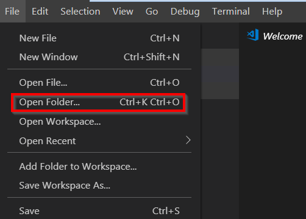Follow the onscreen prompts to install, changing the settings as desired. The defaults will work but other options are available.
Once finished, launch Visual Studio Code.
Installing Extensions¶
- 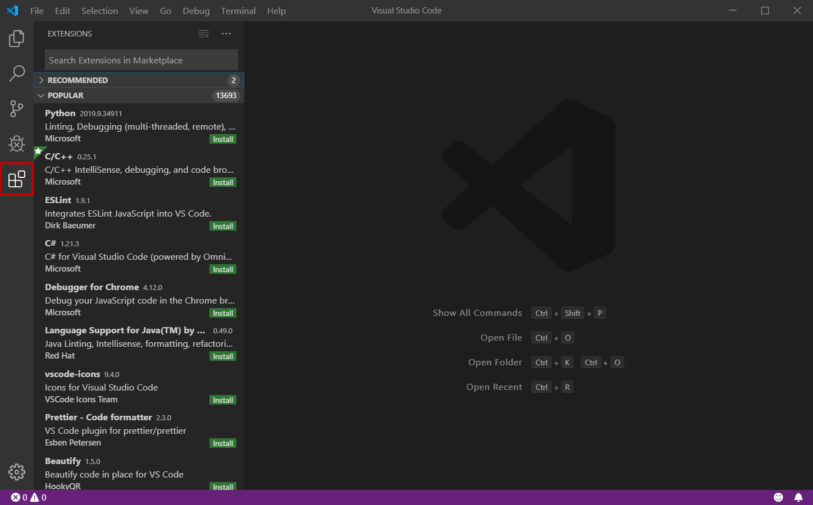In Visual Studio Code, open the Extensions pane by clicking the extensions icon on the left of the IDE.
Search for and install each extension you want to use. Extensions will be automatically updated as new releases come out. For using with the NI Linux Real-Time Toolchain, the following extensions are recommended:
- C/C++ extension – Microsoft extension which adds IntelliSense and debugging support for C/C++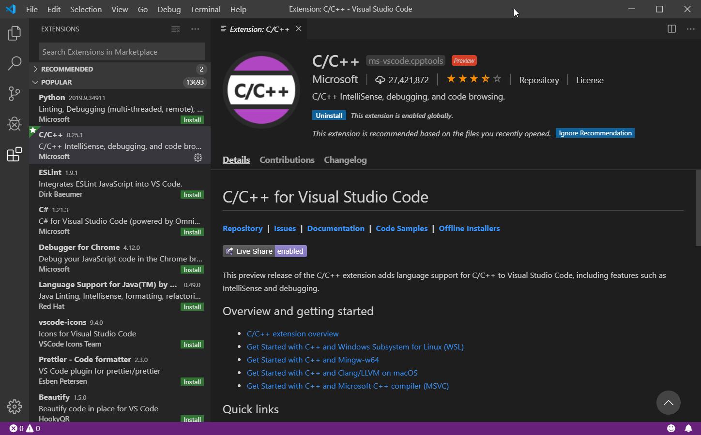
Installing the C/C++ Cross Compile Toolchains¶
For the toolchain installation, NI recommends using the same directory structure for each version of the tools installed on a system. This is flexible as long as the cross compile configuration in the IDE points to the right location.
Navigate to the NI Website and download the Windows toolchains for ARMv7 or x64 depending on the Real-Time device and software versions used on the device. Each toolchain is a compressed collection of the required files rather than an installer. To check which toolchain is necessary for a given device, refer to Real-Time Controllers and Real-Time Operating System Compatibility. Note: the steps below refer to the toolchain version. Typically, this corresponds to the first version that the toolchain supports. For example, the 2018-2019 toolchain is typically referred to as the 18.0 version.
- 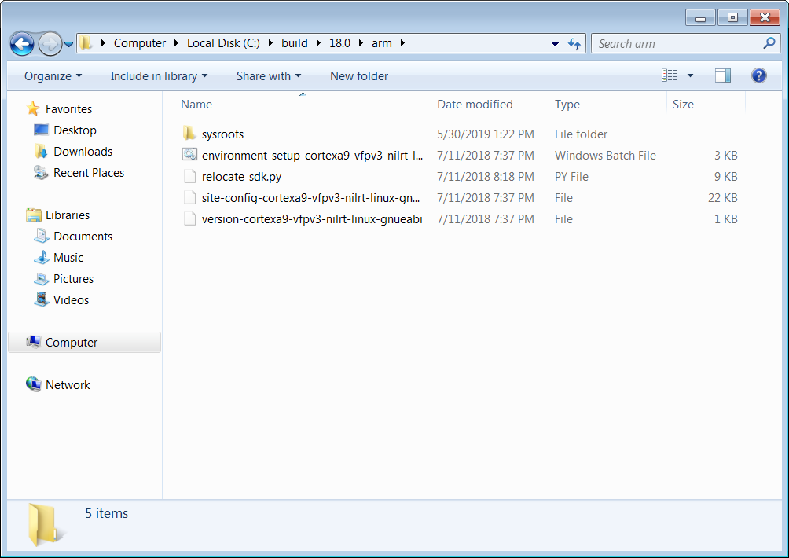If using an ARMv7 target, extract and copy the contents of the toolchain to C:\build\<toolchain version>\arm\. The resulting file structure should look as follows:
- 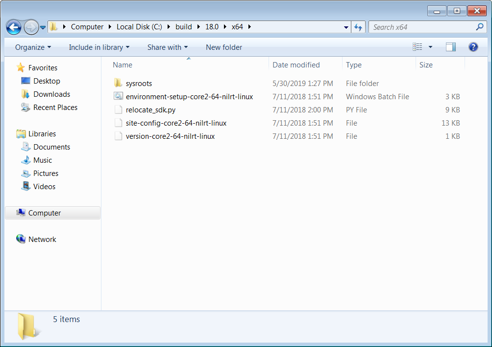If using a x64 target, extract and copy the contents of the toolchain to C:\build\<toolchain version>\x64\. The resulting file structure should look as follows:
Note: Extracting the files may require extracting twice – once to unzip, and once to unpack the tar file. During these extractions there may be dialogs prompting the replacement of files or warnings. The warnings can be safely ignored.
Other Tools¶
Since Visual Studio Code is meant to be flexible and is not tailored to a specific use case, much of the build and deployment process is decoupled from the IDE itself. This has the advantage that more advanced users can configure and use any third-party tools they want with many extensions enabling this further. Below are the options used in this series of tutorials and which should be installed to follow along with this tutorial series. Note that these options will mostly be used through Tasks in Visual Studio Code or separately from the environment but that various extensions may help integrate or better fulfil usage requirements.
FileZilla¶
FileZilla is a free, cross-platform FTP application, consisting of FileZilla Client and FileZilla Server. FileZilla Client will be used as a sFTP client to transfer files to and from a NI Linux Real-Time system as needed. Note that this is not required if a system will only be used for compilation and not deployment.
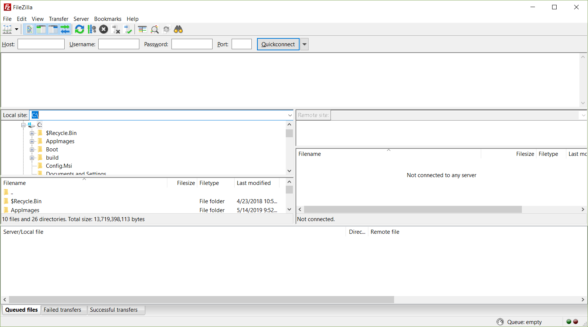
Note: As an alternative to FileZilla, NI recommends the OpenSSH command line utilities included with Windows 10 as of the Autumn 2018 release of that Operating System. Refer to the official OpenSSH documentation for information on its use.
Putty¶
PuTTY is a free and open-source terminal emulator, serial console and network file transfer application. In this use case, we’ll be using it as an SSH Client to interact with the remote system.
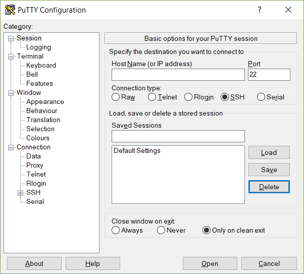CMake¶
CMake is a cross-platform free and open-source software tool for managing the build process of software using a compiler-independent method. Essentially, CMake is a tool that generates the files needed for build tools such as Make or Ninja. It will allow configurable builds which, with some work, can be made cross platform friendly as well.
This series of tutorials were created using CMake 3.14.4. For more information on using CMake and version difference, refer to the official CMake documentation.
Ninja¶
Ninja is a small build system and one of the tools CMake can generate build files for. These files allow Ninja to automate the build process for (in this case) C/C++ code like using GNU Make on a UNIX system. Since installing Ninja is a bit more involved than simply running a Windows installer, follow the below steps to ensure it’s configured correctly for the tutorials.
Download the Ninja binary files for Windows.
- 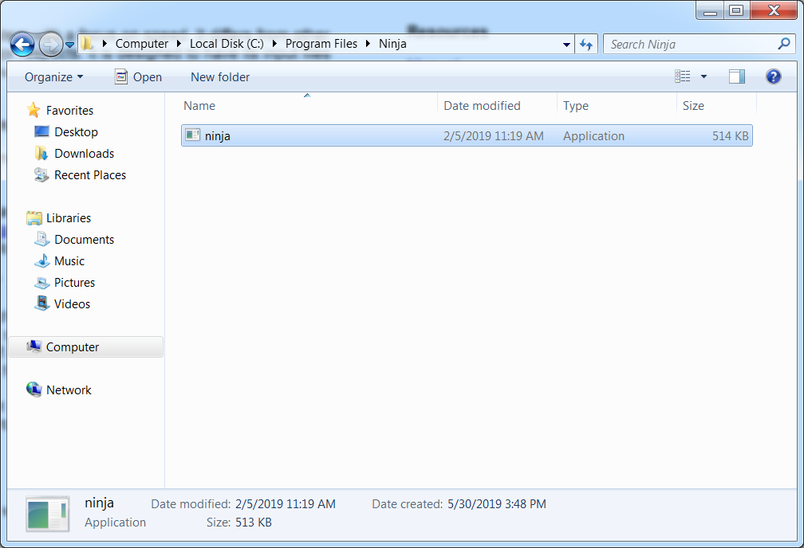Extract and copy Ninja.exe to a suitable location (e.g., C:\Program Files\Ninja\)
- 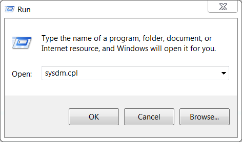The executable can be added to the system PATH for easier use. Press Start+R to open the Run window, then type in sysdm.cpl and hit OK. This will launch the System Properties window.
- In the System Properties window, navigate to the Advanced page and select Environment Variables… to open the Environment Variables window.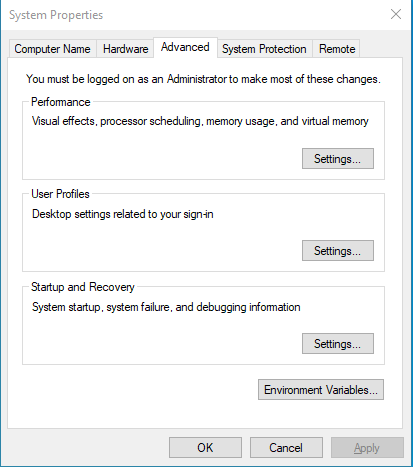
- 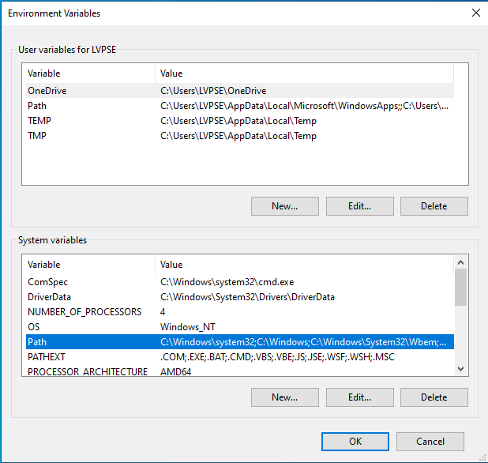In the System variables section of the Environment Variables window, navigate to and select Path then click Edit…
- 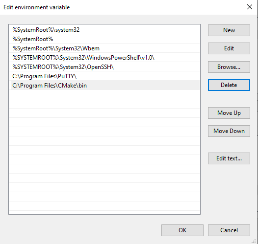In the Edit environment variable window, click New to add a new path.
- Enter the path to the directory containing the ninja binary (e.g., C:\Program Files\Ninja\). Click OK.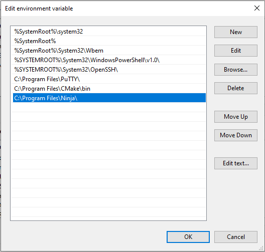
Click OK twice more to exit the System Properties window.
- Confirm that Ninja is now accessible in a new command prompt by running ninja –version. This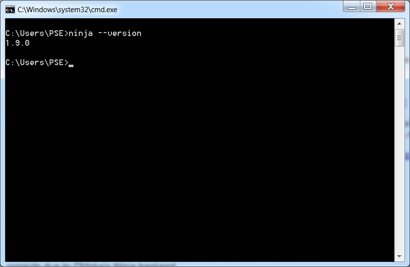
Next Steps¶
With the software installed, it’s time to configure Visual Studio Code for a project using the NI Linux Real-Time compilers.